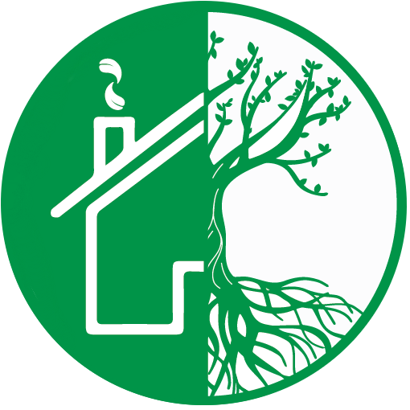

A bioregion mirror, in development. One county tested so far.
A problem cooperative formation, regen practice, and place-based work all share.
When the place can't see itself, it can't tend itself.
Existing approaches see something. None see the cascade.
All three miss because they don't read connections at scale, against reference.
Read connections. Compare like-for-like. Catch stress before collapse.
When a measurement leaves the band, the methodology surfaces it before the place loses what it didn't know it had.
Measurement turns into pathway, not just findings.
Read → compare → diagnose → opportunity → expressed proof → curated mentorship → connection restored.
Reading is the input. Connection restored is the output.
Honest about minimum capacity. Honest about the growth surface.
We're at minimum capacity. The methodology is built to grow into itself — with the practitioners and places willing to walk it with us.
Thank you for sitting with this.
I'm interested in collaborating on duplicable blueprints for launching community cooperatives — to support bioregional acceleration and restore agency to the places that hold it.
Scan to book a 60-min
One twin is a case study. Two is a method.
The library is the future.
Mindful Living Community · Catawba Care Network · v0.3 · Sunday 2026-04-27